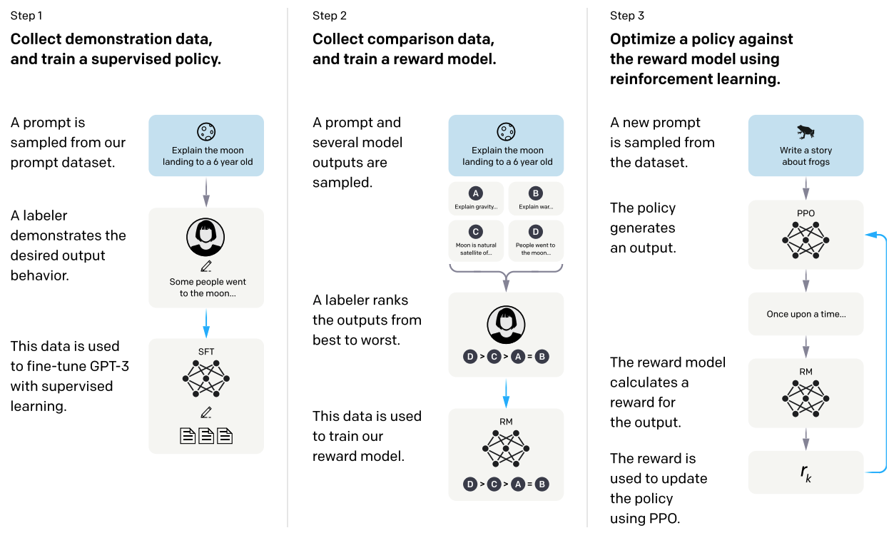
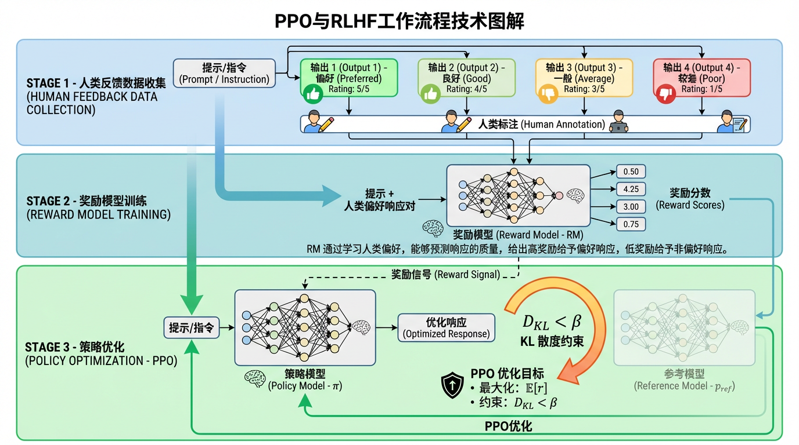

5.3. LLM建模的基本流程¶
在前面的章节中，我们介绍了Transformer的自回归生成机制和Diffusion的迭代去噪范式。实际上，大语言模型（Large Language Model, LLM）本质上是规模化的Transformer模型，通过将Transformer架构扩展到数十亿甚至数万亿参数规模，并在海量文本数据上进行训练，展现出了令人惊叹的语言理解和生成能力。
从Transformer到LLM的演进，不仅仅是参数规模的增长，更重要的是训练范式的系统化。早期的Transformer模型（如BERT、GPT-2）主要关注单一的预训练目标，而现代LLM（如GPT-3、GPT-4、LLaMA等）则发展出了一套完整的”预训练-指令微调-偏好对齐”三阶段训练流程，使得模型不仅能够生成流畅的文本，还能够理解复杂的指令、遵循人类意图、完成多样化的任务。
然而，将LLM应用于推荐系统并非简单地”套用”现成的语言模型，而是需要理解LLM建模的核心原理，并针对推荐场景进行适当的改造和优化。本节将系统介绍LLM建模的基本流程，重点关注那些与生成式推荐密切相关的技术环节，为后续章节中端到端生成式推荐算法的介绍奠定基础。
5.3.1. LLM建模的三阶段范式¶
当前主流的LLM建模遵循“预训练-指令微调-偏好对齐”三阶段范式，这一范式最早在InstructGPT中得到系统化的阐述 (Ouyang et al., 2022) ，并被后续的GPT-4、Claude、LLaMA等模型广泛采用。这三个阶段各有明确的目标和训练策略，共同构成了一个完整的模型能力构建体系。理解这三个阶段的核心思想和技术细节，对于掌握生成式推荐的实现至关重要。
{kind=link}

图5.3.1 InstructGPT后训练三阶段流程¶
如上图所示，InstructGPT论文给出了基于预训练模型之上的后训练（post-training）流程，展示了使模型从”能生成文本”到”能遵循人类意图”的三个递进步骤。第一步（Step 1）是收集示范数据并进行监督微调（SFT）：人类标注者针对给定的提示词（prompt）编写高质量示范输出，这些数据用于对预训练模型做有监督微调，使模型初步学会遵循指令。第二步（Step 2）是收集对比数据并训练奖励模型（RM）：对同一提示词，让模型生成多个不同输出，标注者对这些输出进行排序（从最优到最差），这些偏好数据用于训练奖励模型，使其能够自动评估输出质量。第三步（Step 3）是使用强化学习优化策略：以奖励模型作为反馈信号，通过近端策略优化（PPO）算法持续改进模型的生成策略，同时通过KL散度约束防止模型偏离参考模型（reference model）过远，确保训练稳定性。
5.3.1.1. 预训练：语言能力基础¶
预训练（Pre-training）是LLM建模的第一阶段，也是最耗费计算资源的阶段。预训练的目标是让模型在大规模无标注文本数据上学习通用的语言表示和生成能力。这一阶段完全依赖自监督学习，即通过数据本身构造训练信号，无需人工标注。
训练目标：因果语言建模
现代LLM（如GPT系列、LLaMA）主要采用因果语言建模（Causal Language Modeling, CLM）作为预训练目标，也称为下一个token预测（Next Token Prediction）：
其中 \(x_{<i} = (x_1, x_2, \ldots, x_{i-1})\) 表示位置 \(i\) 之前的所有token，\(\theta\) 是模型参数。模型通过最大化这个似然函数，学习如何根据上文预测下一个词，从而掌握语言的统计规律、语法结构、语义关系，甚至一定程度的常识和推理能力。
这个看似简单的目标，在大规模数据和大规模模型的加持下，展现出了惊人的效果。研究表明，当模型规模和数据规模达到一定程度时，会涌现出规模化效应（Scaling Laws） (Kaplan et al., 2020) ：模型的性能随着参数量、数据量、计算量的增加而持续提升，甚至出现零样本学习、少样本学习等涌现能力（Emergent Abilities）。
训练数据：多样化的文本语料
预训练数据通常包括以下几类。
网页文本：从互联网抓取的大量网页内容（如Common Crawl）
书籍：各类书籍的电子版本
学术论文：科学文献和技术文档
代码：GitHub等平台的开源代码
对话数据：论坛、社交媒体的对话记录
数据的多样性和质量对模型的最终能力有决定性影响。高质量的预训练数据可以让模型学到更准确的知识和更好的语言表达能力。
模型架构：Decoder-Only为主
当前主流的LLM主要采用Decoder-Only架构（如GPT、LLaMA），即纯自回归的Transformer解码器。这种架构简洁高效，特别适合大规模训练。也有一些模型采用Encoder-Decoder架构（如T5、BART），但在超大规模模型中，Decoder-Only架构已成为主流。
训练规模：从亿到万亿参数
现代LLM的参数规模从数十亿到数万亿不等，代表模型如下。
GPT-3：1750亿参数
PaLM：5400亿参数
LLaMA-2：7B到70B参数
GPT-4：据估计超过1万亿参数
预训练通常需要数千到数万个GPU/TPU进行数周到数月的训练，成本极高。因此，大多数研究者和企业会选择使用开源的预训练模型（如LLaMA、Mistral等）作为基础，在其上进行后续的微调和适配。
5.3.1.2. 指令微调：遵循指令¶
经过预训练的LLM虽然具备了强大的语言生成能力，但它只是一个”文本补全”工具——给定一段文本，它会自然地续写下去。这种能力并不直接等同于”理解并执行用户指令”。指令微调（Instruction Tuning），也称为监督微调（Supervised Fine-Tuning, SFT），就是第二阶段要解决的问题：让模型学会理解任务指令并按要求生成输出 (Wei et al., 2021) 。
训练数据：指令-输入-输出三元组
指令微调的核心是构造高质量的”指令-输入-输出”标注数据。一个典型的指令微调样本包含三个部分：
指令（Instruction）：总结下面这段文字的主要内容。
输入（Input）：[一段关于人工智能发展历史的文字]
输出（Output）：[人工智能从1950年代诞生至今，经历了符号主义、连接主义等多个发展阶段...]
在InstructGPT的工作中，研究人员收集了大量由人类标注者编写的高质量指令-输出对，涵盖了以下多种任务类型。
生成类任务：写作、翻译、摘要、创作
问答类任务：开放域问答、常识推理、数学问题
分类类任务：情感分析、主题分类
对话类任务：多轮对话、角色扮演
数据的多样性使得模型能够泛化到各种不同的指令形式和任务场景。
训练目标：条件语言建模
指令微调的损失函数是条件语言建模损失，即只对输出部分计算损失：
其中 \(\boldsymbol{c}\) 是条件信息（指令+输入），\(y = (y_1, y_2, \ldots, y_m)\) 是目标输出序列。关键在于，损失只在输出token上计算，指令和输入部分不参与梯度更新。这样模型会专注于学习”给定指令和输入，如何生成正确的输出”。
训练策略：全参数微调或高效微调
指令微调可以采用全参数更新（Full Fine-tuning），也可以采用参数高效的方法（如LoRA），后者在保持性能的同时大幅降低训练成本。指令微调的数据量通常远小于预训练（数万到数十万样本），训练时间也相对较短（数小时到数天）。
效果：零样本和少样本能力的显著提升
经过指令微调的模型，在零样本（Zero-shot）和少样本（Few-shot）任务上的表现会显著超越纯预训练模型。这是因为模型学会了”理解指令”这一元能力，能够根据新的指令快速适配到新任务，而不仅仅是机械地补全文本。
5.3.1.3. 偏好对齐：价值观匹配¶
即使经过指令微调，LLM生成的内容可能仍然存在以下一些问题。
有用性不足：回答可能过于冗长、偏离重点、包含无关信息
真实性问题：可能编造不存在的事实（幻觉问题）
安全性风险：可能生成有害、偏见、不道德的内容
这些问题的根源在于，监督微调只是让模型学习”人类会怎么回答”，但并没有明确优化”什么样的回答更好”。偏好对齐（Preference Alignment）就是第三阶段要解决的问题：让模型的输出更好地符合人类的价值观和偏好 (Ouyang et al., 2022) 。
基于人类反馈的强化学习（RLHF）
InstructGPT提出的偏好对齐方法是RLHF（Reinforcement Learning from Human Feedback），其流程包括以下三个步骤。
步骤1：收集人类偏好数据
对于同一个输入提示（prompt），让指令微调后的模型生成多个不同的输出（通常通过调整采样温度或使用不同的解码策略）。然后，让人类标注者对这些输出进行排序，标注哪个输出更好、哪个更差。这样就得到了偏好对数据 \(\mathcal{D} = \{(\boldsymbol{c}, y_w, y_l)\}\)，其中 \(y_w\) 是更优的输出（chosen），\(y_l\) 是较差的输出（rejected）。
步骤2：训练奖励模型（Reward Model）
使用收集到的偏好数据训练一个奖励模型 \(r_\phi(\boldsymbol{c}, y)\)，用于预测”人类会给这个输出打多少分”。奖励模型通常基于预训练模型初始化，训练目标是让模型对更优输出给出更高的奖励分数：
其中 \(\sigma\) 是sigmoid函数。训练好的奖励模型可以自动评估任意输出的质量，无需每次都请人类标注。
步骤3：策略优化（Policy Optimization）
使用强化学习算法（通常是PPO，Proximal Policy Optimization）来优化生成策略。训练目标是最大化奖励模型的评分，同时通过KL散度约束防止模型偏离原始指令微调模型过远（避免奖励模型被”欺骗”或生成质量退化）：
其中 \(p_{\text{ref}}\) 是参考模型（通常是指令微调后的模型），\(\beta\) 是控制约束强度的超参数。
{kind=link}

图5.3.2 RLHF与PPO流程示意图¶
上图更细致地展示了RLHF的完整技术流程。STAGE 1（人类反馈数据收集）：从提示数据集中采样指令，由模型生成多个候选输出（Output 1-4），人类标注者对这些输出进行质量标注和排序，形成偏好对数据集。STAGE 2（奖励模型训练）：将提示和人类标注的输出对送入奖励模型进行训练，使奖励模型学会为不同质量的输出打分（Reward Scores），输出奖励信号（Reward Signal）供后续策略优化使用。STAGE 3（策略优化）：策略模型（Policy Model）根据提示生成优化后的响应，奖励模型对其进行评分，通过PPO算法更新策略模型参数。关键的是，该阶段引入了KL散度约束（\(D_{KL} \leq \beta\)），确保优化后的策略模型不会过度偏离参考模型（Reference Model），从而保持生成质量的稳定性。整个流程通过奖励信号的反馈循环，使模型的输出逐步向人类偏好对齐。
简化方法：直接偏好优化（DPO）
RLHF虽然有效，但训练流程复杂：需要训练额外的奖励模型，需要使用强化学习算法（训练不稳定），计算成本高。近期的研究提出了更简洁的方法，如DPO（Direct Preference Optimization） (Rafailov et al., 2023) 。
DPO的核心思想是：奖励模型可以用策略模型本身隐式表示。通过数学推导，可以直接从偏好对数据优化策略，无需显式训练奖励模型和使用强化学习：
DPO的训练过程类似监督学习，更加简单稳定，在多个任务上取得了与RLHF相当甚至更好的效果，因此在最近的LLM训练中被广泛采用。
效果：更有用、更安全、更符合人类意图
经过偏好对齐的模型，在实际应用中展现出明显更好的表现：
回答更简洁、更切题、更有用
更少的事实错误和幻觉
更少的有害、偏见内容
更好地遵循复杂指令和隐含意图
这使得LLM能够真正成为可靠的助手工具，而不仅仅是一个语言生成器。
5.3.2. 从LLM到生成式推荐¶
当我们系统梳理了LLM的三阶段训练范式和关键技术组件后，一个自然的问题浮现出来：这套在自然语言处理领域取得巨大成功的技术体系，能否迁移到推荐系统中？答案是肯定的，但这并非一个简单的”拿来主义”过程。生成式推荐的本质，是在深刻理解LLM建模原理的基础上，针对推荐场景的独特性进行创造性的适配和改造。
5.3.2.1. 三阶段范式的推荐映射¶
让我们先从宏观视角审视这种映射关系。LLM的三阶段训练范式——预训练、指令微调、偏好对齐——为推荐系统提供了一个完整的能力构建框架，但每个阶段在推荐场景中都需要重新思考其目标定位和实现路径。
在预训练阶段，LLM通过大规模文本预测学习语言的统计规律和语义知识。对应到推荐场景，我们面对的是用户的行为序列和物品的多模态内容。这里的核心问题在于：如何让模型同时掌握语言理解能力和推荐建模能力？这不是一个简单的二选一，而是需要精心设计预训练任务和数据配比。过于强调语言能力可能导致模型忽视协同过滤信号，而过度聚焦推荐数据又会削弱模型的语义理解和泛化能力。这种平衡需要根据实际应用场景来权衡：如果物品主要依赖内容特征（如新闻、视频），语言能力更重要；如果协同信号丰富（如电商、音乐），则需要更多行为序列建模。
在指令微调阶段，LLM学习将各种任务统一为”理解指令-生成回复”的范式。推荐系统同样面临多样化的任务需求：召回、排序、重排、解释、对话式推荐等。如何将这些推荐任务指令化？这需要设计合适的任务描述和输入-输出格式。更具挑战性的是，推荐系统中的物品往往以ID形式存在（如商品ID、视频ID），这些ID对预训练的语言模型来说是完全陌生的符号。我们必须找到方法将这些ID”翻译”成模型能够理解的语义表示，这正是物品Token化问题的核心——它是连接传统推荐数据和生成式模型的关键桥梁。
在偏好对齐阶段，LLM通过人类反馈学习符合价值观和偏好的生成策略。推荐系统的偏好对齐更为复杂：用户的反馈通常是隐式的（点击、观看时长、跳过等），而非明确的好坏评判；业务目标往往是多维度的（点击率、停留时长、用户留存、生态健康等），需要在多个指标间权衡。如何从隐式反馈中构造有效的偏好信号？如何在多目标优化中找到平衡点？这些问题使得推荐场景的偏好对齐比LLM更加微妙和富有挑战性。
LLM建模阶段 |
推荐系统适配方向 |
核心挑战 |
|---|---|---|
预训练 |
用户行为序列预训练、多模态内容预训练 |
如何表示物品？如何平衡语言能力和推荐能力？ |
指令微调 |
推荐任务指令化、多任务联合训练 |
如何设计推荐指令？如何处理ID化物品？ |
偏好对齐 |
隐式反馈对齐、业务指标优化 |
如何构造偏好数据？如何平衡多目标？ |
5.3.2.2. 推荐场景的特殊挑战¶
除了三阶段范式的适配，生成式推荐还必须直面一些推荐系统特有的、LLM领域不常遇到的挑战。这些挑战往往决定了生成式推荐能否从研究走向实际应用。
首先是物品Token化问题。在自然语言中，token是词或子词，它们本身就承载语义信息。而推荐系统中的物品通常用ID表示——一个抽象的数字编号，对语言模型毫无意义。如何为这些ID注入语义？如何让模型理解”商品12345”和”商品12346”之间的相似性或差异性？这不仅是一个技术问题，更是一个设计哲学的问题：我们是应该将ID映射到语义空间，还是应该用语义描述替代ID，或者寻找某种混合方案？第 5.4节 将深入探讨多种物品表示方案及其权衡。
其次是协同信号的融合。推荐系统的强大之处在于协同过滤——通过用户-物品交互矩阵发现群体行为模式。“买了A的用户通常也买B”这样的知识，并不能从物品的内容描述中直接获得。如何将这种协同信号注入到以语言模型为基础的生成式架构中？这需要在模型设计和训练策略上做精心的考虑，使得模型既能利用语义信息，又能捕捉协同模式。
第三是冷启动问题。新上架的物品、新注册的用户缺乏交互历史，传统协同过滤方法难以发挥作用。生成式推荐的一个重要优势在于，通过LLM的语义理解能力，可以从物品的文本描述、图片、类目等内容特征中快速建立推荐能力。但如何充分发挥这种优势？如何设计模型使其能够灵活地在”有交互数据时依赖协同信号，无交互数据时依赖内容理解”之间切换？这需要在架构设计和训练过程中有意识地培养模型的这种自适应能力。
最后是实时性要求。在线推荐服务通常要求在数十毫秒内完成推理——用户刷新页面，系统必须立即给出推荐结果。然而，生成式模型的自回归特性决定了它需要逐个token生成输出，推理延迟可能达到数百毫秒甚至数秒。如何在保证推荐效果的同时，将延迟压缩到可接受的范围？这不仅需要前述的推理优化技术（量化、KV Cache、推测解码等），更需要在系统架构层面进行创新设计，例如采用混合架构、离在线结合、结果缓存等策略。
通过本节的系统梳理，我们建立了从LLM到生成式推荐的完整知识链条。从三阶段训练范式（预训练-指令微调-偏好对齐）到关键技术组件（位置编码、高效注意力、参数高效微调、推理优化），再到推荐场景的特殊挑战（物品Token化、协同信号融合、冷启动、实时性），这一系列内容揭示了一个核心洞察：生成式推荐不是简单地将语言模型应用于推荐任务，而是将推荐问题重新概念化为序列生成问题，并针对推荐场景的独特性进行深度适配。这种适配既借鉴了LLM成功的建模范式，又创造性地解决了推荐系统特有的技术挑战。
更深层次地看，LLM为推荐系统带来的不仅是技术手段的更新，更是思维方式的转变。传统推荐系统将召回、排序、重排等环节分而治之，而生成式推荐试图用统一的生成框架端到端地建模整个推荐流程。这种统一性不仅简化了系统架构，更为多任务学习、知识迁移、可解释性等高级能力创造了条件，代表着推荐系统从工程驱动向模型驱动、从规则主导向学习主导的范式演进。理解了这些基本原理后，我们已经为深入探索生成式推荐的具体实现——从物品表示、架构设计到训练策略和工业部署——做好了充分的准备。